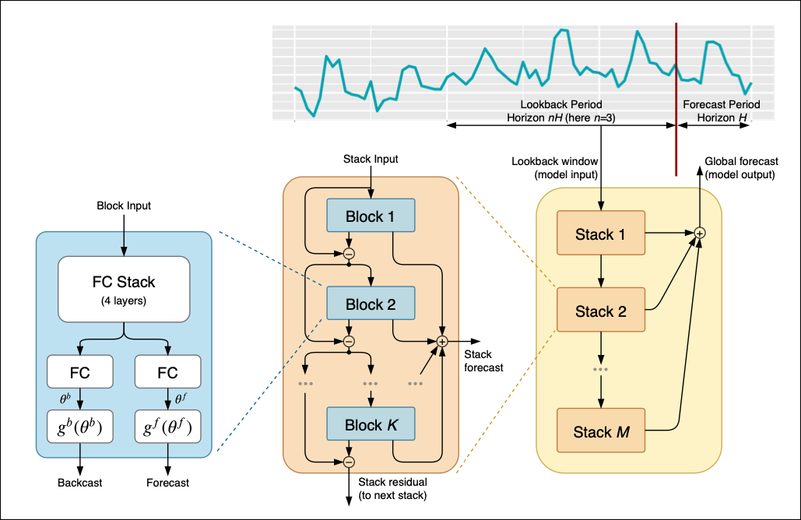
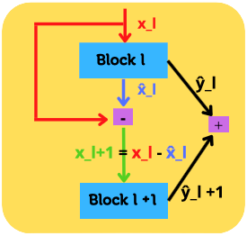
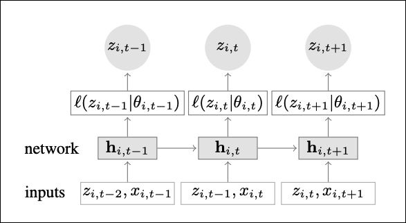
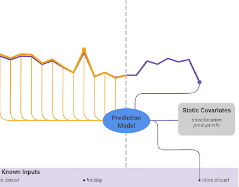
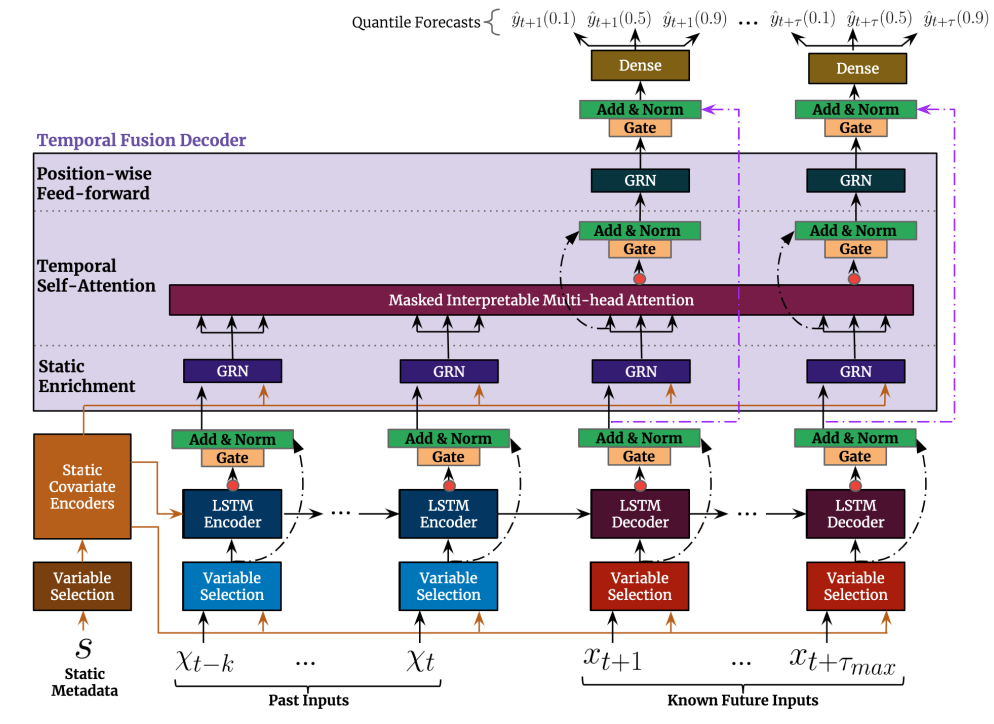
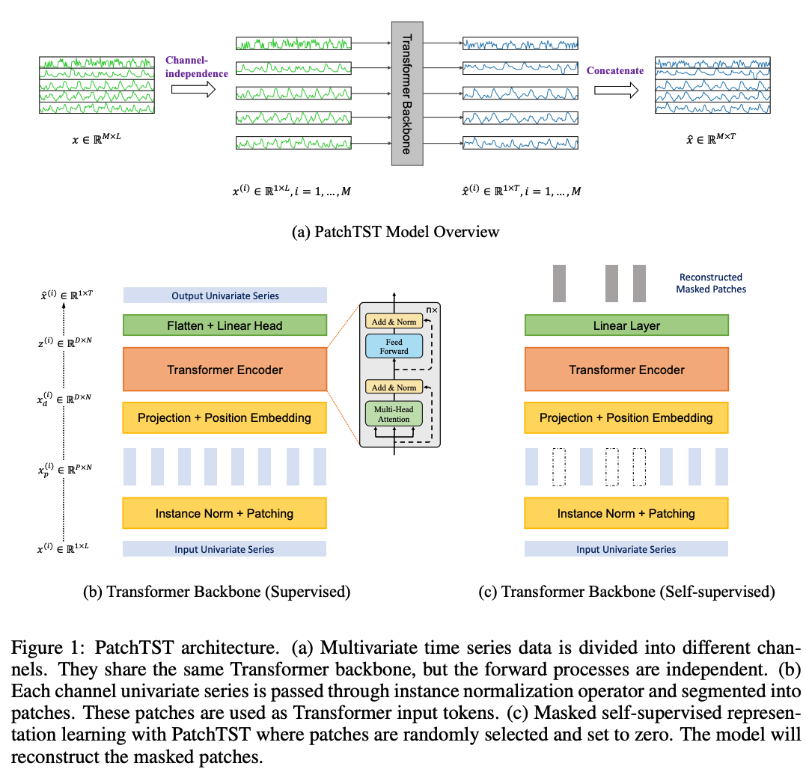
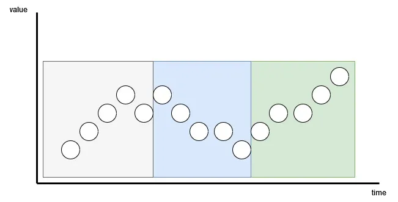
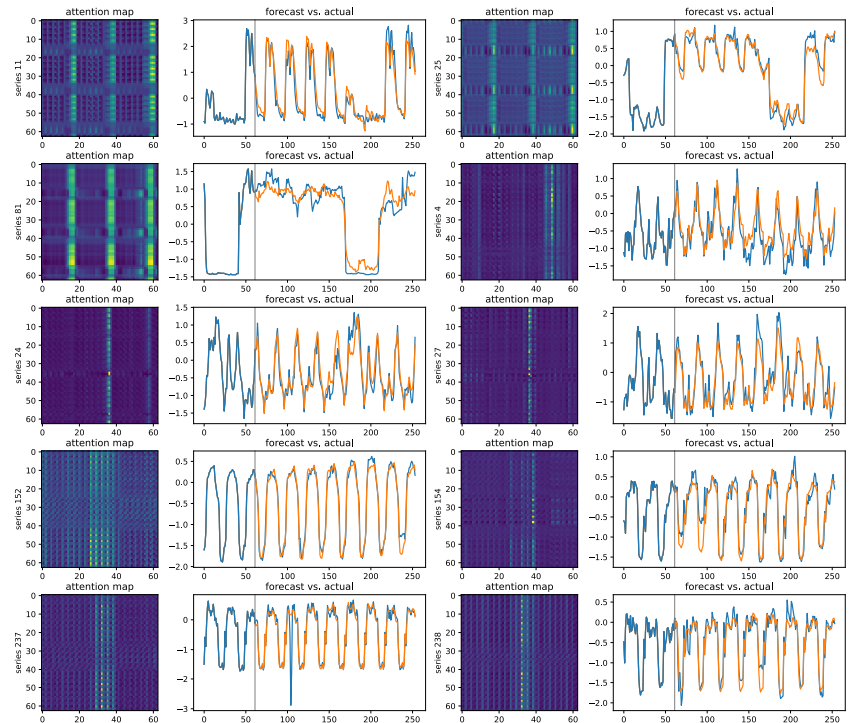

26 Deep Learning for Time Series
26.1 Recurrent Models
26.1.1 LSTM
Long Short-Term Memory (Hochreiter & Schmidhuber, 1997) is a recurrent architecture designed to capture long-range dependencies through an explicit cell state \(\mathbf{c}_t\) that persists across steps, modulated by three learned gates.
At each time step \(t\), given input \(\mathbf{x}_t\) and previous hidden state \(\mathbf{h}_{t-1}\):
\[\mathbf{f}_t = \sigma(\mathbf{W}_f[\mathbf{h}_{t-1};\, \mathbf{x}_t] + \mathbf{b}_f) \quad \text{(forget gate)}\] \[\mathbf{i}_t = \sigma(\mathbf{W}_i[\mathbf{h}_{t-1};\, \mathbf{x}_t] + \mathbf{b}_i) \quad \text{(input gate)}\] \[\tilde{\mathbf{c}}_t = \tanh(\mathbf{W}_c[\mathbf{h}_{t-1};\, \mathbf{x}_t] + \mathbf{b}_c) \quad \text{(candidate cell)}\] \[\mathbf{o}_t = \sigma(\mathbf{W}_o[\mathbf{h}_{t-1};\, \mathbf{x}_t] + \mathbf{b}_o) \quad \text{(output gate)}\]
\[\boxed{\mathbf{c}_t = \mathbf{f}_t \odot \mathbf{c}_{t-1} + \mathbf{i}_t \odot \tilde{\mathbf{c}}_t, \qquad \mathbf{h}_t = \mathbf{o}_t \odot \tanh(\mathbf{c}_t)}\]
Forget gate \(\mathbf{f}_t\): decides which part of the old cell state to discard. When \(\mathbf{f}_t \approx 1\), the cell state is passed through unchanged — enabling gradient flow over long sequences and preventing vanishing gradients.
Input gate \(\mathbf{i}_t\): controls how much of the new candidate \(\tilde{\mathbf{c}}_t\) to write into the cell state.
Output gate \(\mathbf{o}_t\): controls what portion of the cell state is exposed as the hidden state \(\mathbf{h}_t\).
Interview Insight: “How does LSTM solve the vanishing gradient problem?” In a vanilla RNN, \(\partial \mathbf{h}_t / \partial \mathbf{h}_0 = \prod W^T\) which vanishes exponentially for typical weight matrices. LSTM’s cell state update \(\mathbf{c}_t = \mathbf{f}_t \odot \mathbf{c}_{t-1} + \cdots\) creates an additive highway through time — the gradient of \(\mathbf{c}_t\) w.r.t. \(\mathbf{c}_{t-1}\) is \(\mathbf{f}_t\), which can remain close to 1, giving gradients a path that doesn’t vanish.
26.1.2 GRU
Gated Recurrent Unit (Cho et al., 2014) is a simplified alternative to LSTM with no separate cell state and two gates instead of three:
\[\mathbf{r}_t = \sigma(\mathbf{W}_r[\mathbf{h}_{t-1};\, \mathbf{x}_t]) \quad \text{(reset gate)}\] \[\mathbf{z}_t = \sigma(\mathbf{W}_z[\mathbf{h}_{t-1};\, \mathbf{x}_t]) \quad \text{(update gate)}\] \[\tilde{\mathbf{h}}_t = \tanh(\mathbf{W}_h[\mathbf{r}_t \odot \mathbf{h}_{t-1};\, \mathbf{x}_t])\] \[\boxed{\mathbf{h}_t = (1 - \mathbf{z}_t) \odot \mathbf{h}_{t-1} + \mathbf{z}_t \odot \tilde{\mathbf{h}}_t}\]
The update gate \(\mathbf{z}_t\) interpolates between carrying the old hidden state forward (\(\mathbf{z}_t \to 0\)) and replacing it with the new candidate (\(\mathbf{z}_t \to 1\)). The reset gate \(\mathbf{r}_t\) controls how much past state influences the candidate.
GRU has fewer parameters than LSTM and often performs comparably on time series tasks; preferred when training data is limited.
26.1.3 Limitations of RNNs
- Sequential computation: each step depends on the previous hidden state — parallelization across time is impossible during training.
- Fixed-size bottleneck: the hidden state \(\mathbf{h}_t \in \mathbb{R}^d\) must compress the entire history into a fixed-dimensional vector, which limits capacity for very long sequences.
- Quadratic gradient decay over long horizons: even with gating, gradients from very distant past steps are attenuated.
26.2 Temporal Convolutional Networks
Temporal Convolutional Networks (TCNs) apply 1D convolutions with two key modifications to handle long-range temporal dependencies.
Causal convolutions: the convolution kernel is zero-padded on the right so the output at time \(t\) depends only on \(x_{\leq t}\), preserving temporal causality.
Dilated convolutions: a dilation factor \(d\) spaces out the receptive field without increasing kernel size. For a kernel of size \(k\) at dilation \(d\): \[y_t = \sum_{i=0}^{k-1} w_i \cdot x_{t - d \cdot i}\]
Stacking layers with exponentially increasing dilation \(d = 1, 2, 4, \ldots, 2^{L-1}\) gives a receptive field of \(2^L(k-1) + 1\) steps with only \(O(L \cdot k)\) parameters and \(O(L)\) depth. This enables very long effective context windows at low parameter cost.
WaveNet (van den Oord et al., 2016) introduced this architecture for audio generation. For time series forecasting, TCN-style stacks of dilated causal convolutions have been shown to match or outperform LSTM on many benchmarks, with the added benefit of full parallelism during training.
Advantages over RNNs: training is fully parallelizable (no sequential dependency); the receptive field is explicit and controlled by architecture rather than implicit and learned; stable gradients.
Disadvantage: the receptive field is fixed by architecture — extending the context window requires adding layers or increasing dilation, not just runtime adjustments.
26.3 N-BEATS
N-BEATS (Neural Basis Expansion Analysis for Interpretable Time Series, Oreshkin et al., 2019) was the first deep learning model to outperform classical statistical methods on established benchmarks, while providing decomposable forecasts.
26.3.1 Architecture
The model is a stack of basic blocks, each sharing the same structure. A block receives a context sequence, produces:
- A backcast \(\hat{\mathbf{x}}_l\) — a reconstruction of the input it can explain.
- A forecast \(\hat{\mathbf{y}}_l\) — a prediction of the future.

Residual stacking: each block processes the residual left unexplained by all previous blocks: \[\mathbf{x}_{l+1} = \mathbf{x}_l - \hat{\mathbf{x}}_l\]

The final forecast is the sum of individual block forecasts: \[\hat{\mathbf{y}} = \sum_l \hat{\mathbf{y}}_l\]
Basis expansion: within each block, an MLP stack maps the input to coefficient vectors \(\boldsymbol{\theta}^b, \boldsymbol{\theta}^f\), which are projected through basis functions \(\{\psi_k^b\}, \{\psi_k^f\}\): \[\hat{\mathbf{x}}_l = \sum_k \theta_k^b \psi_k^b(\mathbf{t}_\text{in}), \qquad \hat{\mathbf{y}}_l = \sum_k \theta_k^f \psi_k^f(\mathbf{t}_\text{out})\]
26.3.2 Interpretable Configuration
Two stacks with interpretable basis functions:
Trend stack — polynomial basis over the forecast time vector \(\mathbf{t} \in [0, 1]^h\): \[\psi_k^f(t) = t^k, \quad k = 0, 1, \ldots, p_{\max}\]
Substituting into the forecast equation gives, for stack \(s\) and block \(\ell\), a low-order polynomial in \(t\) — capturing slowly varying trend: \[\hat{\mathbf{y}}_{s,\ell} = \sum_{i=0}^{p} \theta^f_{s,\ell,i}\, t^i\]
Seasonality stack — Fourier basis: \[\psi_{2j}^f(t) = \cos\!\left(\frac{2\pi j t}{H}\right), \quad \psi_{2j+1}^f(t) = \sin\!\left(\frac{2\pi j t}{H}\right), \quad j = 1, \ldots, \lfloor h/2 \rfloor\]
Substituting gives a truncated Fourier series, capturing periodic patterns: \[\hat{\mathbf{y}}_{s,\ell} = \sum_{i=0}^{\lfloor H/2 \rfloor - 1} \theta^f_{s,\ell,i} \cos(2\pi i t) + \theta^f_{s,\ell,i+\lfloor H/2 \rfloor} \sin(2\pi i t)\]
This decomposes forecasts into trend and seasonal components, analogous to classical additive decomposition — but the components are learned, not prescribed.
Generic configuration: identity basis (\(\psi_k = \mathbf{e}_k\), standard basis vectors), typically a deeper network. Achieves higher accuracy but sacrifices interpretability.
Limitations: - Strictly univariate (N-BEATSx extends to exogenous variables). - Trained on a single time series — cannot generalize across series at different scales; requires sufficient history to extract training pairs.
26.4 DeepAR
DeepAR (Salinas et al., 2020) is a probabilistic autoregressive model based on LSTM, designed to scale across many heterogeneous time series simultaneously.
26.4.1 Model
For time series \(i\) at step \(t\), the model takes as input the previous observation \(z_{i,t-1}\) (scaled) and exogenous covariates \(\mathbf{x}_{i,t}\): \[\mathbf{h}_{i,t} = \text{LSTM}\!\left(\mathbf{h}_{i,t-1},\; \left[\tfrac{z_{i,t-1}}{\nu_i};\, \mathbf{x}_{i,t}\right]\right)\]

The LSTM hidden state \(\mathbf{h}_{i,t}\) is decoded to the parameters of a likelihood: \[p(z_{i,t} \mid \mathbf{h}_{i,t}) = \mathcal{N}\!\left(\mu(\mathbf{h}_{i,t}),\; \sigma^2(\mathbf{h}_{i,t})\right)\]
Training minimizes the negative log-likelihood over all observed steps.
Per-series scaling: \[\nu_i = 1 + \frac{1}{t_0}\sum_{t=1}^{t_0} z_{i,t}\] is one plus the mean value over the context window (the \(+1\) avoids division by zero for series that are identically zero). Dividing inputs by \(\nu_i\) and multiplying outputs by \(\nu_i\) handles series at different scales (e.g., clothing sales vs. furniture sales differing by orders of magnitude).
Inference: sample \(z_{i,t}\) autoregressively from \(p(z_{i,t} | \mathbf{h}_{i,t})\) for \(t = T+1, \ldots, T+h\); repeat \(S\) times to produce Monte Carlo forecast intervals.
Cold start: because DeepAR learns a global model shared across series, it can forecast a new series with little or no history by relying on covariates and the patterns learned from similar series — an advantage over single-series models like N-BEATS.
26.5 Temporal Fusion Transformer (TFT)
TFT (Lim et al., 2021) is a multi-horizon forecasting model that handles heterogeneous input types through a combination of recurrent layers, attention, and gating mechanisms.

26.5.1 Input Types
TFT distinguishes three categories of inputs:
| Input type | Example | Known in future? |
|---|---|---|
| Static covariates | Store ID, product category | N/A |
| Time-varying known | Day-of-week, holiday flag, price | Yes |
| Time-varying unknown | Sales volume, temperature | No (target) |
All inputs are projected to a common embedding dimension \(d\) via variable-specific linear layers. Static embeddings are used to initialize LSTM states.
26.5.2 Architecture

Variable Selection Network (VSN): per-time-step gating over all input features → weighted sum of embeddings, plus a scalar importance weight per variable (used for post-hoc interpretability).
LSTM encoder–decoder: processes the context window (encoder) and generates a representation of the forecast horizon (decoder) using known future inputs.
Interpretable Multi-Head Attention over decoder positions: standard scaled dot-product attention with a single shared \(\mathbf{V}\) projection across heads, so attention weights are directly comparable across heads. The attention map over time steps reveals which past periods matter most for each forecast step.
Quantile output: rather than a point forecast, TFT predicts quantiles \(\{q_{0.1}, q_{0.5}, q_{0.9}\}\) (or any set) via quantile loss (pinball loss): \[\mathcal{L}(q) = \frac{1}{Th}\sum_{i,t} \max\!\left(q\,(y_{i,t} - \hat{y}_{i,t}^{(q)}),\; (q-1)(y_{i,t} - \hat{y}_{i,t}^{(q)})\right)\]
Interview Insight: “Why does TFT use quantile regression rather than Gaussian output like DeepAR?” Quantile regression makes no distributional assumption about the forecast error — useful when the error distribution is skewed or multimodal. Gaussian output is simpler and enables analytic credible intervals but may be miscalibrated for asymmetric targets.
26.6 PatchTST
PatchTST (Nie et al., 2023) applies a standard ViT backbone to time series via two structural innovations.

26.6.1 Patching
Split a length-\(L\) time series into overlapping patches of size \(P\) with stride \(S\): \[N = \left\lfloor \frac{L - P}{S} \right\rfloor + 1 \quad \text{patches}\]

Each patch is linearly projected to a \(d\)-dimensional embedding — analogous to how ViT embeds image patches. This reduces the sequence length fed to the Transformer from \(L\) to \(N \ll L\), bringing attention complexity from \(O(L^2)\) to \(O(N^2)\) while also improving temporal locality (each token represents a local window rather than a single noisy time step).
26.6.2 Channel Independence
For multivariate time series, each variable (channel) is processed independently through the same shared Transformer backbone — no cross-variable attention. Motivation: temporal attention maps are driven by the local shape of a time series; different variables can have very different temporal patterns, and forcing a single shared attention map across variables degrades representation quality. Shared weights still enable transfer across channels.

26.6.3 Self-Supervised Pre-training
PatchTST can be pre-trained via masked patch prediction: randomly mask a fraction of patches and train the model to reconstruct them (analogous to BERT/MAE). The pre-trained backbone is fine-tuned for downstream forecasting with a linear projection head. Self-supervised pre-training is particularly valuable when labeled forecasting data is scarce.
Interview Insight: “What is the trade-off between channel independence and channel mixing in multivariate forecasting?” Channel independence (PatchTST, N-BEATS per-channel) is more robust when cross-variable correlations are weak or unstable — fewer parameters to overfit, and no risk of spurious cross-variable interactions. Channel mixing (iTransformer, multi-variate LSTM) can be beneficial when strong stable correlations exist (e.g., correlated sensor readings), but requires more data to learn meaningful cross-channel attention.
26.7 State Space Models
State Space Models (SSMs) represent a time series via a latent state \(\mathbf{h}_t\) evolving under linear dynamics. The continuous-time formulation: \[\dot{\mathbf{h}}(t) = \mathbf{A}\mathbf{h}(t) + \mathbf{B}x(t), \qquad y(t) = \mathbf{C}\mathbf{h}(t) + Dx(t)\]
Discretized with step size \(\Delta\) via zero-order hold: \[\boxed{\mathbf{h}_t = \bar{\mathbf{A}}\mathbf{h}_{t-1} + \bar{\mathbf{B}}x_t, \qquad y_t = \mathbf{C}\mathbf{h}_t + Dx_t}\] \[\bar{\mathbf{A}} = e^{\Delta \mathbf{A}}, \qquad \bar{\mathbf{B}} = (\Delta\mathbf{A})^{-1}(e^{\Delta\mathbf{A}} - \mathbf{I})\Delta\mathbf{B}\]
S4 (Gu et al., 2021) parameterizes \(\mathbf{A}\) as a structured matrix (diagonal plus low-rank) that enables \(O(N \log N)\) computation via convolution. S4 demonstrates that SSMs can match Transformers on long-range sequence modeling tasks while maintaining linear inference time per step.
Mamba (Gu & Dao, 2023) extends S4 with input-selective state transitions: \(\mathbf{B}\), \(\mathbf{C}\), and \(\Delta\) are functions of the input \(x_t\) (computed by small linear projections), making the state transition content-dependent rather than fixed. This allows the model to selectively remember or forget information based on the current input, analogous to the gating mechanism in LSTMs but derived from continuous-time dynamical systems.
SSMs vs. Transformers vs. RNNs:
| Property | RNN (LSTM/GRU) | Transformer | SSM (Mamba) |
|---|---|---|---|
| Training parallelism | Sequential | Parallel | Parallel (convolution mode) |
| Inference per step | \(O(1)\) memory | \(O(L)\) KV cache | \(O(1)\) (recurrent mode) |
| Long-range modeling | Limited | Strong (\(O(L^2)\)) | Strong (structured linear) |
| Context window | Implicit | Fixed (\(O(L^2)\) cost) | Very long (linear cost) |
26.8 Model Comparison
| Model | Univariate | Multivariate | Probabilistic | Multi-horizon | Architecture |
|---|---|---|---|---|---|
| N-BEATS | Yes | No (N-BEATSx: Yes) | No | Yes | MLP residual stacks |
| DeepAR | Yes | Via covariates | Yes (Gaussian) | Autoregressive | LSTM |
| TFT | Yes | Yes | Yes (quantile) | Yes | LSTM + Attention |
| PatchTST | Yes | Yes (channel-indep.) | No | Yes | ViT |
| Mamba | Yes | Yes | No | Yes | SSM |
26.9 Interview Questions
Q: What are the key limitations of LSTMs for time series forecasting?
- Sequential training: the recurrent dependency prevents parallelization across time — training is \(O(T)\) in wall-clock time even on GPUs. (2) Fixed-capacity bottleneck: the hidden state has fixed dimension \(d\) regardless of sequence length — very long sequences compress history into the same \(d\)-dimensional vector. (3) Autoregressive inference: multi-horizon forecasts require iteratively sampling, accumulating errors. TCNs and Transformers address (1); attention mechanisms partially address (2).
Q: How does N-BEATS differ from classical time series decomposition (STL)?
STL (Seasonal and Trend decomposition using Loess) is an explicit statistical procedure that separates trend, seasonality, and remainder using locally-weighted regression — the decomposition components are defined by the algorithm, not learned. N-BEATS learns the basis functions themselves from data (in the generic configuration) or constrains them to polynomial/Fourier form (interpretable configuration). N-BEATS can capture non-linear dynamics and learns the relevant seasonal periods from data rather than requiring them to be specified in advance.
Q: Why does DeepAR normalize each time series by its mean, and what problem does this solve?
Different items in a retail demand dataset can differ by orders of magnitude — selling 10,000 units/day vs. 10 units/day. Without scaling, the LSTM would need to simultaneously represent wildly different numerical ranges from shared weights, which is impossible. Dividing each series by its context-window mean \(\nu_i\) maps all series to a common scale, allowing the shared LSTM to focus on pattern shape rather than magnitude. The final output is rescaled by \(\nu_i\) to recover the original units.
Q: What is the advantage of patching in PatchTST vs. a point-level Transformer?
A point-level Transformer on length-\(L\) input has \(O(L^2)\) attention complexity. With patches of size \(P\) and stride \(S\), the sequence length is \(N = \lfloor(L-P)/S\rfloor + 1\), reducing complexity to \(O(N^2) = O((L/P)^2)\) — a factor of \(P^2\) reduction. Beyond efficiency, each patch embedding aggregates a local window of observations, reducing sensitivity to individual noisy time steps and improving the signal-to-noise ratio of each token.
Q: How does Mamba differ from S4, and why is selectivity important for time series?
S4 uses fixed structured matrices \(\mathbf{A}, \mathbf{B}, \mathbf{C}\) — the state transition is the same regardless of the current input. Mamba makes \(\mathbf{B}, \mathbf{C}, \Delta\) input-dependent: the model learns to write different content into state depending on what the current token contains. For time series, this is important because some time steps carry informative events (sudden demand spikes, sensor anomalies) that should strongly update the state, while others are routine and should largely pass through — exactly the kind of selective memory that S4 cannot express with fixed dynamics.
Q: When would you choose TFT over a simpler LSTM for production forecasting?
TFT is preferable when: (1) you have heterogeneous input types (static metadata, known-future covariates, unknown-future targets); (2) you need calibrated prediction intervals for decision-making under uncertainty (quantile output); (3) interpretability of which features and time steps drive the forecast is required (VSN importances, attention weights). For simple univariate series or when latency is critical, a lighter model (DeepAR, TCN) may be more appropriate.